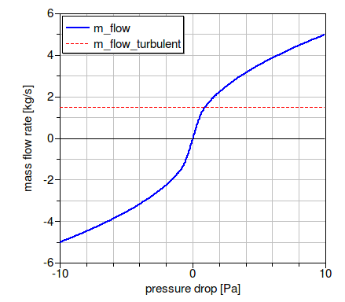
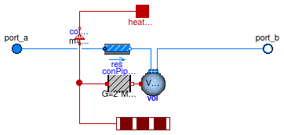
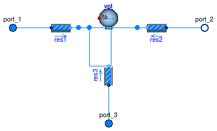
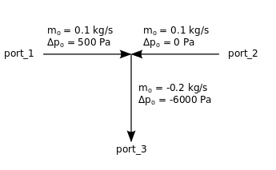

Package with models for fixed flow resistances (pipes, diffusers etc.)
k = m ⁄ √ΔP.
For models of valves and air dampers, see Buildings.Fluid.Actuators. For models of flow resistances as part of the building constructions, see Buildings.Airflow.Multizone.
The model Buildings.Fluid.FixedResistances.FixedResistanceDpM is a fixed flow resistance that takes as parameter a nominal flow rate and a nominal pressure drop. The actual resistance is scaled using the above equation.
The model Buildings.Fluid.FixedResistances.LosslessPipe is an ideal pipe segment with no pressure drop. It is primarily used in models in which the above pressure drop model need to be replaced by a model with no pressure drop.
The model Buildings.Fluid.FixedResistances.SplitterFixedResistanceDpM can be used to model flow splitters or flow merges.
Extends from Modelica.Icons.VariantsPackage (Icon for package containing variants).
| Name | Description |
|---|---|
| FixedResistanceDpM | Fixed flow resistance with dp and m_flow as parameter |
| LosslessPipe | Pipe with no flow friction and no heat transfer |
| Pipe | Pipe with finite volume discretization along flow path |
| SplitterFixedResistanceDpM | Flow splitter with fixed resistance at each port |
| Collection of models that illustrate model use and test models | |
Fixed flow resistance with dp and m_flow as parameter
This is a model of a resistance with a fixed flow coefficient. The mass flow rate is computed as
ṁ = k √ΔP,
where
k is a constant and
ΔP is the pressure drop.
The constant k is equal to
k=m_flow_nominal/sqrt(dp_nominal),
where m_flow_nominal and dp_nominal
are parameters.
In the region
abs(m_flow) < m_flow_turbulent,
the square root is replaced by a differentiable function
with finite slope.
The value of m_flow_turbulent is
computed as follows:
use_dh is false
(the default setting),
the equation
m_flow_turbulent = deltaM * abs(m_flow_nominal),
where deltaM=0.3 and
m_flow_nominal are parameters that can be set by the user.
m_flow_turbulent = eta_nominal*dh/4*π*ReC is used,
where
eta_nominal is the dynamic viscosity, obtained from
the medium model. The parameter
dh is the hydraulic diameter and
ReC=4000 is the critical Reynolds number, which both
can be set by the user.
The figure below shows the pressure drop for the parameters
m_flow_nominal=5 kg/s,
dp_nominal=10 Pa and
deltaM=0.3.

If the parameter
show_T is set to true,
then the model will compute the
temperature at its ports. Note that this can lead to state events
when the mass flow rate approaches zero,
which can increase computing time.
The parameter from_dp is used to determine
whether the mass flow rate is computed as a function of the
pressure drop (if from_dp=true), or vice versa.
This setting can affect the size of the nonlinear system of equations.
If the parameter linearized is set to true,
then the pressure drop is computed as a linear function of the
mass flow rate.
Setting allowFlowReversal=false can lead to simpler
equations. However, this should only be set to false
if one can guarantee that the flow never reverses its direction.
This can be difficult to guarantee, as pressure imbalance after
the initialization, or due to medium expansion and contraction,
can lead to reverse flow.
For more detailed models that compute the actual flow friction,
models from the package
Modelica.Fluid
can be used and combined with models from the
Buildings library.
The pressure drop is computed by calling a function in the package Buildings.Fluid.BaseClasses.FlowModels, This package contains regularized implementations of the equation
m = sign(Δp) k √ Δp
and its inverse function.
To decouple the energy equation from the mass equations, the pressure drop is a function of the mass flow rate, and not the volume flow rate. This leads to simpler equations.
Extends from Buildings.Fluid.BaseClasses.PartialResistance (Partial model for a hydraulic resistance).
| Type | Name | Default | Description |
|---|---|---|---|
| replaceable package Medium | PartialMedium | Medium in the component | |
| MassFlowRate | m_flow_turbulent | if (computeFlowResistance an... | Turbulent flow if |m_flow| >= m_flow_turbulent [kg/s] |
| Boolean | use_dh | false | Set to true to specify hydraulic diameter |
| Length | dh | 1 | Hydraulic diameter [m] |
| Real | ReC | 4000 | Reynolds number where transition to turbulent starts |
| Real | deltaM | 0.3 | Fraction of nominal mass flow rate where transition to turbulent occurs |
| Nominal condition | |||
| MassFlowRate | m_flow_nominal | Nominal mass flow rate [kg/s] | |
| Pressure | dp_nominal | Pressure drop at nominal mass flow rate [Pa] | |
| Initialization | |||
| MassFlowRate | m_flow.start | 0 | Mass flow rate from port_a to port_b (m_flow > 0 is design flow direction) [kg/s] |
| Pressure | dp.start | 0 | Pressure difference between port_a and port_b [Pa] |
| Assumptions | |||
| Boolean | allowFlowReversal | true | = true to allow flow reversal, false restricts to design direction (port_a -> port_b) |
| Advanced | |||
| Diagnostics | |||
| Boolean | show_T | false | = true, if actual temperature at port is computed |
| Boolean | from_dp | false | = true, use m_flow = f(dp) else dp = f(m_flow) |
| Boolean | homotopyInitialization | true | = true, use homotopy method |
| Boolean | linearized | false | = true, use linear relation between m_flow and dp for any flow rate |
| Type | Name | Description |
|---|---|---|
| FluidPort_a | port_a | Fluid connector a (positive design flow direction is from port_a to port_b) |
| FluidPort_b | port_b | Fluid connector b (positive design flow direction is from port_a to port_b) |
Pipe with no flow friction and no heat transfer
Model of a pipe with no flow resistance, no heat loss and no transport delay.
This model can be used to replace a replaceable pipe model
in flow legs in which no friction should be modeled.
This is for example done in the outlet port of the
base class for three way valves,
Buildings.Fluid.Actuators.BaseClasses.PartialThreeWayValve.
Extends from Buildings.Fluid.Interfaces.PartialTwoPortInterface (Partial model transporting fluid between two ports without storing mass or energy).
| Type | Name | Default | Description |
|---|---|---|---|
| replaceable package Medium | PartialMedium | Medium in the component | |
| Nominal condition | |||
| MassFlowRate | m_flow_nominal | Nominal mass flow rate [kg/s] | |
| Initialization | |||
| MassFlowRate | m_flow.start | 0 | Mass flow rate from port_a to port_b (m_flow > 0 is design flow direction) [kg/s] |
| Pressure | dp.start | 0 | Pressure difference between port_a and port_b [Pa] |
| Assumptions | |||
| Boolean | allowFlowReversal | true | = true to allow flow reversal, false restricts to design direction (port_a -> port_b) |
| Advanced | |||
| MassFlowRate | m_flow_small | 1E-4*abs(m_flow_nominal) | Small mass flow rate for regularization of zero flow [kg/s] |
| Diagnostics | |||
| Boolean | show_T | false | = true, if actual temperature at port is computed |
| Type | Name | Description |
|---|---|---|
| FluidPort_a | port_a | Fluid connector a (positive design flow direction is from port_a to port_b) |
| FluidPort_b | port_b | Fluid connector b (positive design flow direction is from port_a to port_b) |
Pipe with finite volume discretization along flow path

Model of a pipe with flow resistance and optional heat exchange with environment.
If useMultipleHeatPorts=false (default option), the pipe uses a single heat port
for the heat exchange with the environment.
If useMultipleHeatPorts=true, then one heat port for each segment of the pipe is
used for the heat exchange with the environment.
If the heat port is unconnected, then the pipe has no heat loss.
The default value for the parameter diameter is computed such that the flow velocity
is equal to v_nominal=0.15 for a mass flow rate of m_flow_nominal.
Both parameters, diameter and v_nominal, can be overwritten
by the user.
The default value for dp_nominal is two times the pressure drop that the pipe
would have if it were straight with no fittings.
The factor of two that takes into account the pressure loss of fittings can be overwritten.
These fittings could also be explicitly modeled outside of this component using models from
the package
Modelica.Fluid.Fittings.
For mass flow rates other than m_flow_nominal, the model
Buildings.Fluid.FixedResistances.FixedResistanceDpM is used to
compute the pressure drop.
For a steady-state model of a flow resistance, use Buildings.Fluid.FixedResistances.FixedResistanceDpM instead of this model.
Extends from Buildings.Fluid.FixedResistances.BaseClasses.Pipe (Model of a pipe with finite volume discretization along the flow path).
| Type | Name | Default | Description |
|---|---|---|---|
| replaceable package Medium | PartialMedium | Medium in the component | |
| Integer | nSeg | 10 | Number of volume segments |
| Length | thicknessIns | Thickness of insulation [m] | |
| ThermalConductivity | lambdaIns | Heat conductivity of insulation [W/(m.K)] | |
| Length | diameter | sqrt(4*m_flow_nominal/rho_de... | Pipe diameter (without insulation) [m] |
| Length | length | Length of the pipe [m] | |
| Velocity | v_nominal | 0.15 | Velocity at m_flow_nominal (used to compute default diameter) [m/s] |
| Length | roughness | 2.5e-5 | Absolute roughness of pipe, with a default for a smooth steel pipe (dummy if use_roughness = false) [m] |
| Boolean | useMultipleHeatPorts | false | = true to use one heat port for each segment of the pipe, false to use a single heat port for the entire pipe |
| Nominal condition | |||
| MassFlowRate | m_flow_nominal | Nominal mass flow rate [kg/s] | |
| Pressure | dp_nominal | 2*dpStraightPipe_nominal | Pressure difference [Pa] |
| Initialization | |||
| MassFlowRate | m_flow.start | 0 | Mass flow rate from port_a to port_b (m_flow > 0 is design flow direction) [kg/s] |
| Pressure | dp.start | 0 | Pressure difference between port_a and port_b [Pa] |
| Dynamics | |||
| Equations | |||
| Dynamics | energyDynamics | Modelica.Fluid.Types.Dynamic... | Formulation of energy balance |
| Dynamics | massDynamics | energyDynamics | Formulation of mass balance |
| Real | mSenFac | 1 | Factor for scaling the sensible thermal mass of the volume |
| Initialization | |||
| AbsolutePressure | p_start | Medium.p_default | Start value of pressure [Pa] |
| Temperature | T_start | Medium.T_default | Start value of temperature [K] |
| MassFraction | X_start[Medium.nX] | Medium.X_default | Start value of mass fractions m_i/m [kg/kg] |
| ExtraProperty | C_start[Medium.nC] | fill(0, Medium.nC) | Start value of trace substances |
| ExtraProperty | C_nominal[Medium.nC] | fill(1E-2, Medium.nC) | Nominal value of trace substances. (Set to typical order of magnitude.) |
| Assumptions | |||
| Boolean | allowFlowReversal | true | = true to allow flow reversal, false restricts to design direction (port_a -> port_b) |
| Advanced | |||
| MassFlowRate | m_flow_small | 1E-4*abs(m_flow_nominal) | Small mass flow rate for regularization of zero flow [kg/s] |
| Boolean | homotopyInitialization | true | = true, use homotopy method |
| Flow resistance | |||
| Boolean | from_dp | false | = true, use m_flow = f(dp) else dp = f(m_flow) |
| Boolean | linearizeFlowResistance | false | = true, use linear relation between m_flow and dp for any flow rate |
| Real | deltaM | 0.1 | Fraction of nominal flow rate where flow transitions to laminar |
| Real | ReC | 4000 | Reynolds number where transition to turbulent starts |
| Type | Name | Description |
|---|---|---|
| FluidPort_a | port_a | Fluid connector a (positive design flow direction is from port_a to port_b) |
| FluidPort_b | port_b | Fluid connector b (positive design flow direction is from port_a to port_b) |
| HeatPort_a | heatPort | Single heat port that connects to outside of pipe wall (default, enabled when useMultipleHeatPorts=false) |
| HeatPorts_a | heatPorts[nSeg] | Multiple heat ports that connect to outside of pipe wall (enabled if useMultipleHeatPorts=true) |
 Buildings.Fluid.FixedResistances.SplitterFixedResistanceDpM
Buildings.Fluid.FixedResistances.SplitterFixedResistanceDpM
Flow splitter with fixed resistance at each port

Model of a flow splitter or mixer with a fixed resistance in each flow leg. In each flow lag, a pressure drop can be modeled, and at the fluid junction, a mixing volume can be modeled.
The pressure drop is implemented using the model Buildings.Fluid.FixedResistances.FixedResistanceDpM. If its nominal pressure drop is set to zero, then the pressure drop model will be removed. For example, the pressure drop declaration
m_flow_nominal={ 0.1, 0.1, -0.2},
dp_nominal = {500, 0, -6000}
would model a mixer that has the nominal flow rates and associated pressure drops
as shown in the figure below. Note that port_3 is set to negative values.
The negative values indicate that at the nominal conditions, fluid is leaving the component.

Optionally, at the fluid junction, a control volume can be modeled.
This is implemented using the model
Buildings.Fluid.Delays.DelayFirstOrder.
The fluid volume is modeled if
dynamicBalance=true, and it is removed if
dynamicBalance=false.
The control volume has the size
V = sum(abs(m_flow_nominal[:])/3)*tau/rho_nominal
where tau is a parameter and rho_nominal is the density
of the medium in the volume at nominal condition.
Setting dynamicBalance=true can help reducing the size of the nonlinear
system of equations.
Extends from Buildings.BaseClasses.BaseIcon (Base icon), Buildings.Fluid.BaseClasses.PartialThreeWayResistance (Flow splitter with partial resistance model at each port).
| Type | Name | Default | Description |
|---|---|---|---|
| replaceable package Medium | PartialMedium | Medium in the component | |
| Boolean | use_dh | false | Set to true to specify hydraulic diameter |
| Real | deltaM | 0.3 | Fraction of nominal mass flow rate where transition to turbulent occurs |
| Length | dh[3] | {1,1,1} | Hydraulic diameter [m] |
| Real | ReC[3] | {4000,4000,4000} | Reynolds number where transition to turbulent starts |
| Nominal condition | |||
| MassFlowRate | m_flow_nominal[3] | Mass flow rate. Set negative at outflowing ports. [kg/s] | |
| Pressure | dp_nominal[3] | Pressure. Set negative at outflowing ports. [Pa] | |
| Dynamics | |||
| Equations | |||
| Dynamics | energyDynamics | Modelica.Fluid.Types.Dynamic... | Formulation of energy balance |
| Dynamics | massDynamics | energyDynamics | Formulation of mass balance |
| Boolean | dynamicBalance | true | Set to true to use a dynamic balance, which often leads to smaller systems of equations |
| MassFlowRate | mDyn_flow_nominal | sum(abs(m_flow_nominal[:])/3) | Nominal mass flow rate for dynamic momentum and energy balance [kg/s] |
| Nominal condition | |||
| Time | tau | 10 | Time constant at nominal flow for dynamic energy and momentum balance [s] |
| Initialization | |||
| AbsolutePressure | p_start | Medium.p_default | Start value of pressure [Pa] |
| Temperature | T_start | Medium.T_default | Start value of temperature [K] |
| MassFraction | X_start[Medium.nX] | Medium.X_default | Start value of mass fractions m_i/m [kg/kg] |
| ExtraProperty | C_start[Medium.nC] | fill(0, Medium.nC) | Start value of trace substances |
| ExtraProperty | C_nominal[Medium.nC] | fill(1E-2, Medium.nC) | Nominal value of trace substances. (Set to typical order of magnitude.) |
| Advanced | |||
| Boolean | from_dp | true | = true, use m_flow = f(dp) else dp = f(m_flow) |
| PortFlowDirection | portFlowDirection_1 | Modelica.Fluid.Types.PortFlo... | Flow direction for port_1 |
| PortFlowDirection | portFlowDirection_2 | Modelica.Fluid.Types.PortFlo... | Flow direction for port_2 |
| PortFlowDirection | portFlowDirection_3 | Modelica.Fluid.Types.PortFlo... | Flow direction for port_3 |
| Boolean | linearized | false | = true, use linear relation between m_flow and dp for any flow rate |
| Boolean | homotopyInitialization | true | = true, use homotopy method |
| Type | Name | Description |
|---|---|---|
| FluidPort_a | port_1 | First port, typically inlet |
| FluidPort_b | port_2 | Second port, typically outlet |
| FluidPort_a | port_3 | Third port, can be either inlet or outlet |